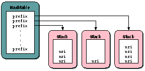

|
| | |
The internal DOM gives the translet access to the XML document(s) it has
to transform. The interface to the internal DOM is specified in the DOM.java
class. This is the interface that the translet uses to access the DOM.
There is also an interface specified for DOM caches -- DOMCache.java
|
| | |
| | |
Text nodes are stored identically to attribute values. See the previous
section on attribute nodes.
|
| | |
The internal DOM does currently not contain comment nodes. Yes, I
am quite aware that the DOM has a type assigned to comment nodes, but comments
are still not inserted into the DOM.
|
| | |
Processing instructions are handled as text nodes. These nodes are stored
identically to attribute values. See the previous section on
attribute nodes.
|
|
| | |
Namespace support was added to the internal DOM at a late stage, and the
design and implementation of the DOM bears a few scars because of this.
There is a separate design
document that covers namespaces.
|
 | | | | The DOM adapter - DOMAdapter | | | | |
| | |
|
| | | | The DOM builder - DOMImpl$DOMBuilder | | | | |
| | |
The DOM builder is an inner class of the DOM implementation. The builder
implements the SAX2 ContentHandler interface and populates the DOM
by receiving SAX2 events from a SAX2 parser (presently xerces). An instance
of the DOM builder class can be retrieved from DOMImpl.getBuilder()
method, and this handler can be set as an XMLReader's content handler:
| | | |
final SAXParserFactory factory = SAXParserFactory.newInstance();
final SAXParser parser = factory.newSAXParser();
final XMLReader reader = parser.getXMLReader();
final DOMImpl dom = new DOMImpl();
reader.setContentHandler(dom.getBuilder());
| | | | |
The DOM builder will start to populate the DOM once the XML parser starts
generating SAX2 events:
| | |
This method can be called in one of two ways; either with the expanded
QName (the element's separate uri and local name are supplied) or as a
normal QName (one String on the format prefix:local-name). The DOM stores
elements as expanded QNames so it needs to know the element's namespace URI.
Since the URI is not supplied with this call, we have to keep track of
namespace prefix/uri mappings while we're building the DOM. See
startPrefixMapping() below for details on
namespace handling.
The startElement() inserts the element as a child of the current
parent element, creates attribute nodes for all attributes in the supplied
"Attributes" attribute list (by a series of calls to
makeAttributeNode()), and finally creates the actual element node
(by calling internElement(), which inserts a new entry in the
_type[] array).
|
| | |
This method does some cleanup after the startElement() method,
such as revering xml:space settings and linking the element's
child nodes.
|
| | |
This method is called for each namespace declaration in the source
document. The parser should call this method before the prefix is referenced
in a QName that is passed to the startElement() call. Namespace
prefix/uri mappings are stored in a Hashtable structure. Namespace prefixes
are used as the keys in the Hashtable, and each key maps to a Stack that
contains the various URIs that the prefix maps to. The URI on top of the
stack is the URI that the prefix currently maps to.

Figure 2: Namespace handling in the DOM builder
Each call to startPrefixMapping() results in a lookup in the
Hashtable (using the prefix), and a push() of the URI onto the
Stack that the prefix maps to.
|
| | |
A namespace prefix/uri mapping is closed by locating the Stack for the
prefix, and then pop()'ing the topmost URI off this Stack.
|
| | |
Text nodes are stored as simple character sequences in the character array
_text[]. The start and lenght of a node's text can be determined by
using the node index to look up _offsetOrChild[] and
_lengthOrAttribute[].
We want to re-use character sequences if two or more text nodes have
identical content. This can be achieved by having two different text node
indexes map to the same character sequence. The maybeReuseText()
method is always called before a new character string is stored in the
_text[] array. This method will locate the offset of an existing
instance of a character sequence.
|
| | |
This method initialises a bunch of data structures that are used by the
builder. It also pushes the default namespace on the namespace stack (so that
the "" prefix maps to the null namespace).
|
| | |
This method builds the _namesArray[], _namespace[]
and _nsNamesArray[] structures from temporary datastructures used
in the DOM builder.
|
|
|
|